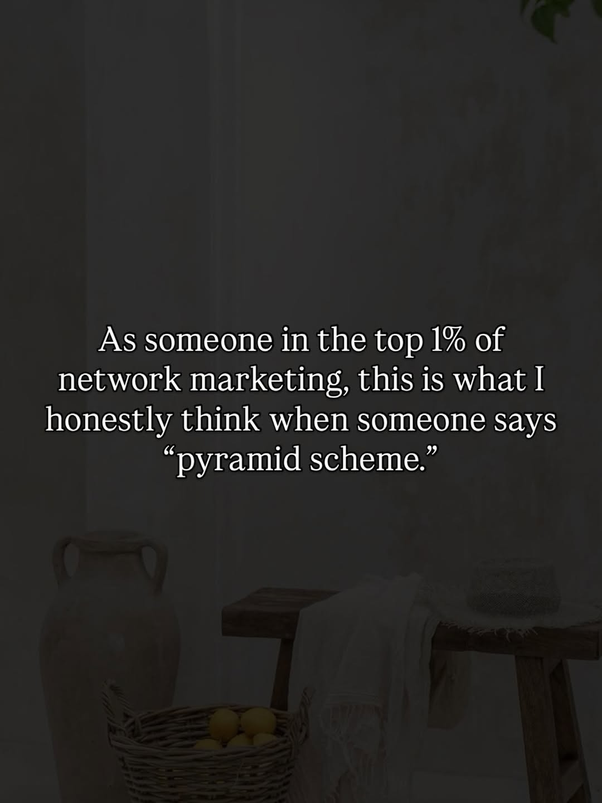
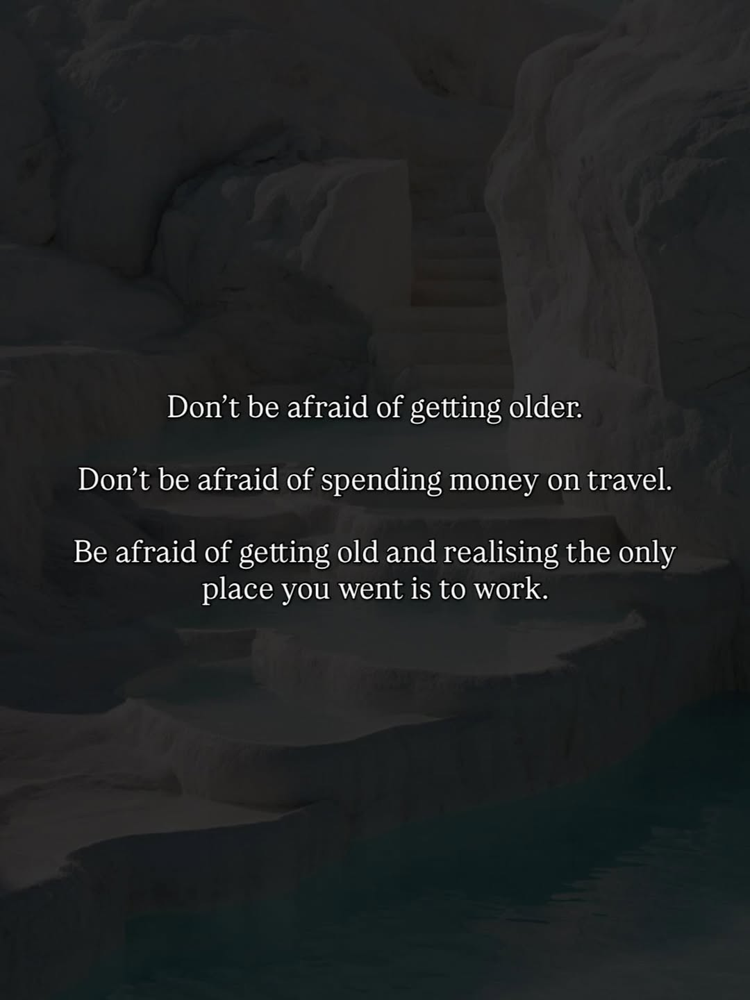

A proposal written for
A proposal for the brand that has already done the hard part - the identity shift. Now it's time for the content to catch up.
01 / 06


I know the Sunday night feeling. The one you named exactly right in December - "every Sunday night felt like a countdown." That specific dread. Not burnout, not boredom. Something quieter and more corrosive - the slow realisation that no matter how hard you worked, the ceiling was someone else's floor.
You didn't just leave a job in July 2024. You packed two suitcases and walked away from a decade of doing things the way you were supposed to. And what struck me reading your content isn't the freedom you have now - it's that you moved before you were ready. That's the part most people miss when they look at your account. They see the Bali mornings and the passive income. You're showing them the decision. The identity shift that had to happen first.
"I stopped following the path I'd been given and started building something of my own." - @theaffluentnomad
You're also building something most freedom coaches aren't: a real offline community. @travel.create.connect, the monthly brunch in Canggu - that's not a content strategy. That's a moat. You're not just living the nomad dream. You're constructing an ecosystem around it. I wanted to acknowledge that you're further along than your current content makes visible - and that gap is exactly where I can help.
02 / 06
Format gap
Your carousels are performing at 5.8x your Reels - and yet Reels are 60% of your content.
Across 100 posts, your carousels average 386 engagement per post. Your Reels average 67. That's not a content quality problem - your Reels have strong writing. It's a format allocation problem. You're investing the majority of your effort into the format that delivers the minority of your results.
Opportunity: Shifting to 40-50% carousels would likely push your ER from 1.5% to 2.5%+ within 60 days - without changing your message at all.
Trust layer
In 100 posts, there is not a single story about someone else whose life changed because of your model.
Every post is Cleo's story. That's powerful - and it's also a missing piece. Your audience is asking themselves: does this work for other people too, or just for her? The answer is almost certainly yes. But right now the content doesn't show it. For cold followers who find you through the TRAVEL CTA, there's no third-party proof to bridge the gap between inspiration and trust.
Opportunity: 1-2 client transformation posts per month - a before/after in someone else's words - would significantly accelerate DM conversions from your CTAs.
CTA fatigue
The TRAVEL comment trigger has appeared in 14 of 100 posts. Your audience can now predict it.
Pattern recognition is the enemy of action. When a follower has seen "comment TRAVEL" seven times, they know what comes next - and they stop clicking. Meanwhile, The Accelerator Program launched in April 2026 without a dedicated trigger. You have a new offer sitting inside an old funnel structure.
Opportunity: New triggers tied specifically to the Accelerator (comment ACCELERATE or LEVEL UP) open fresh conversations with followers who didn't respond to TRAVEL - people who were interested in the mindset side but not ready for the NM pitch.
03 / 06
[Investment: contact for pricing]
[Investment: contact for pricing]
[Investment: contact for pricing]
[Investment: contact for pricing]
04 / 06
I read through 20+ of your captions before writing this. The goal was to write something that sounds like it came from you - not from me. Read it and see if it holds.
Caption
05 / 06